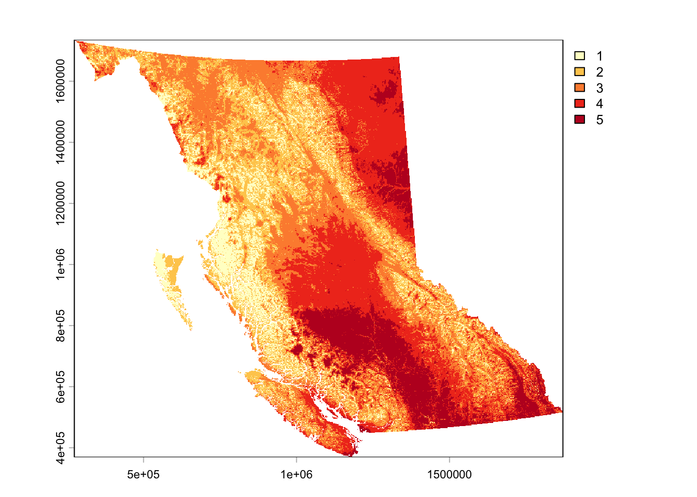
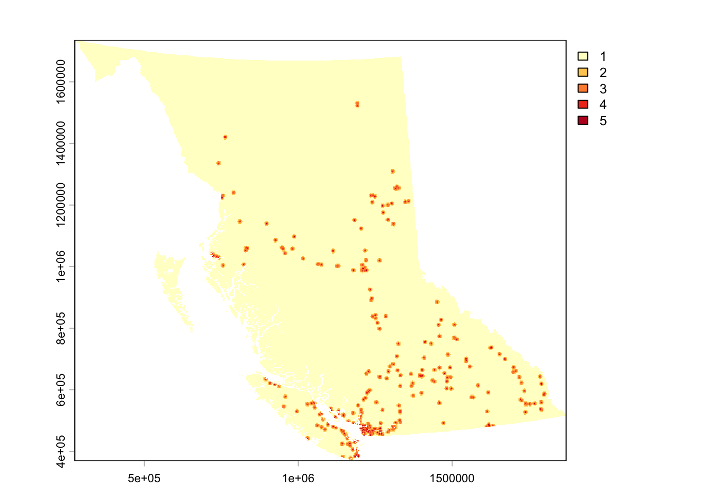
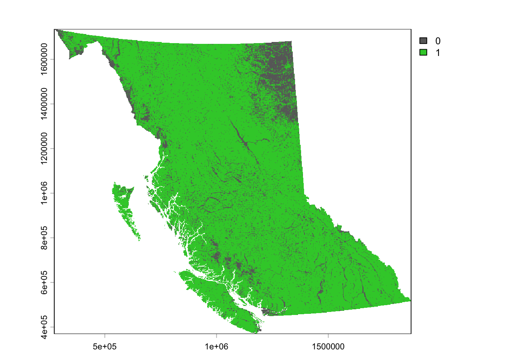
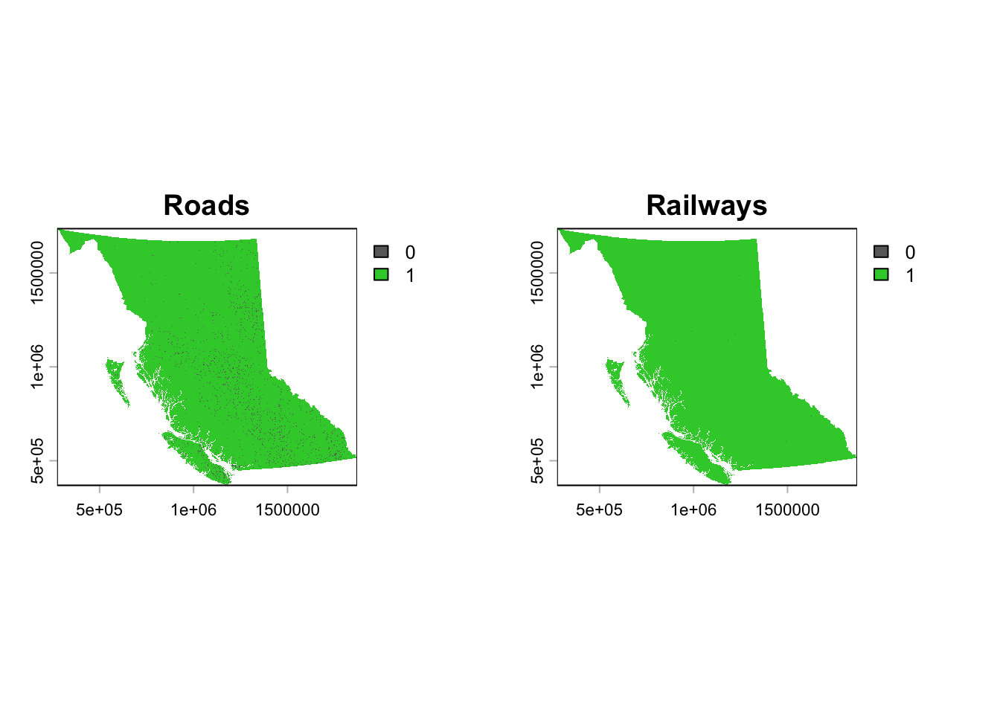
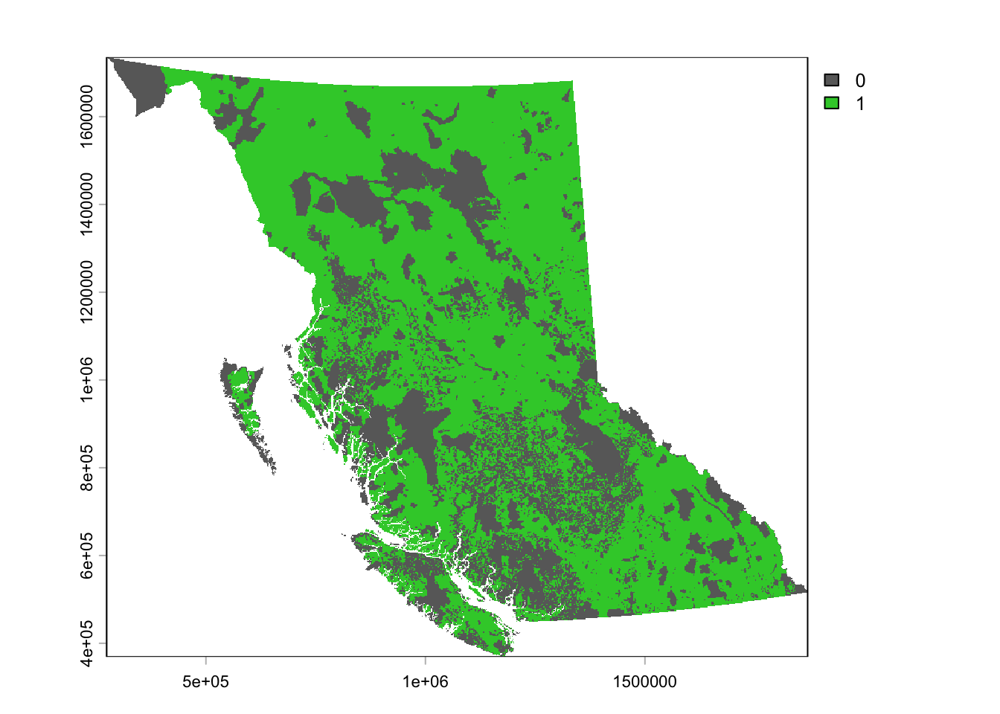
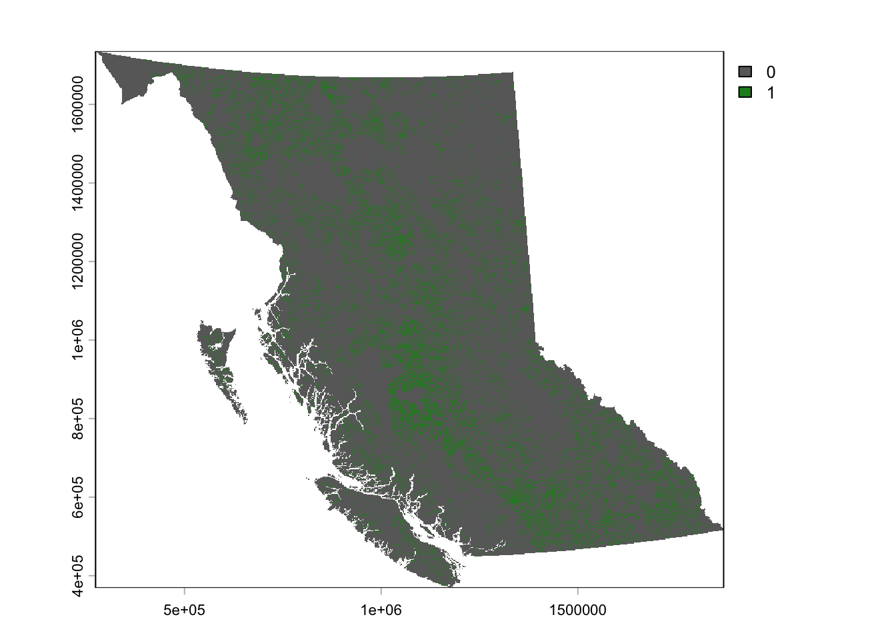
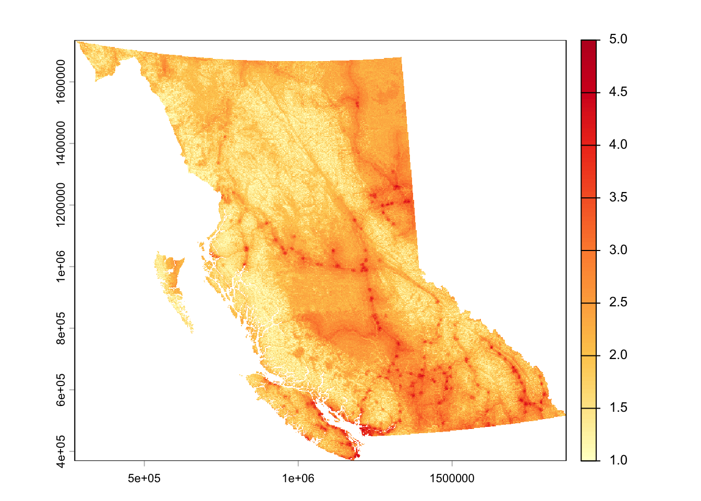
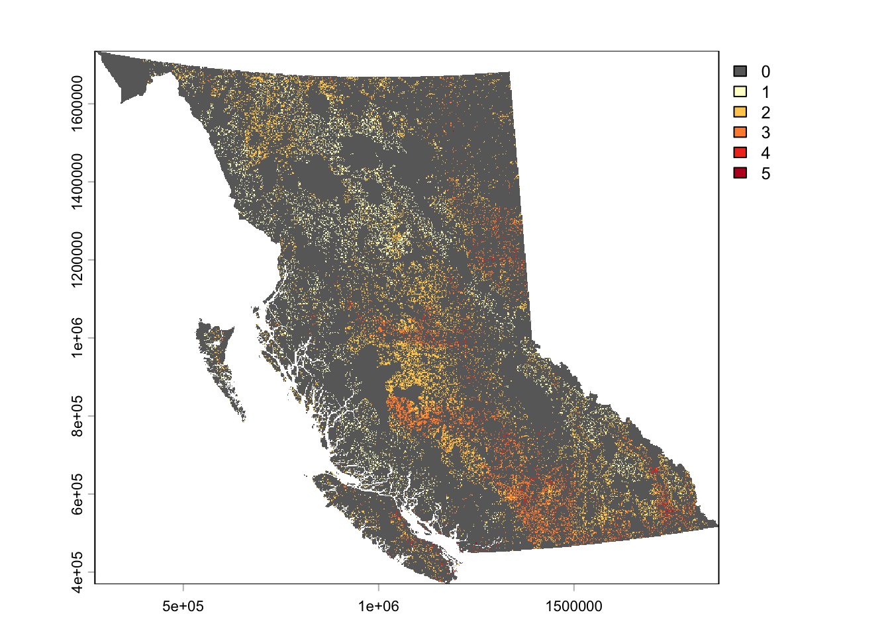

# Load packages
library(terra)
library(sf)
library(tidyverse)
library(exactextractr)
library(AHPtools)
library(ggplot2)
library(scales)
library(dplyr)
library(classInt)
library(bcmaps)
library(stringr)
library(readxl)About This Project
As electricity demand grows across British Columbia, more renewable energy installations need to be developed to support a resilient, diversified, low-carbon future. In light of this challenge, a site suitability analysis was undergone to create a province-wide screening tool that determines the most optimal locations for solar PV development.
This analysis is broken down into 2 main sections:
Stage 1 determines the geographical potential of BC - the total land area where solar farm development is possible.
Stage 2 determines the technical potential of BC - the total energy these sites could produce on a yearly basis.
By providing clear and accessible information on renewable energy potential, this project helps accelerate clean energy development, informs decision-making and supports BC’s transformation to a more resilient and sustainable electricity system.
This document provides a detailed guide of the analysis, including all code used to derive results.
Click for first-draft publication
NOTE: You will need to change each file path to a folder on your computer!
Set-Up
First, each package must be installed and loaded to complete this analysis
I recommend setting up an organized file system, similar to the one below, to save your intermediate outputs and final results.
Solar_Suitability/
├── raw_data/
├── criteria/
│ ├── cleaned/ # Data layers reprojected, clipped, masked, resampled, and rasterized
│ ├── reclassified/ # Data layers reclassified to a 1-5 suitability scale
│ ├── slope/ # DEM-derived slope pieces
│ └── aspect/ # DEM-derived aspect pieces
├── constraints/
│ ├── binary/ # Data layers brought to a binary classification
│ └── mask/ # Final constraints mask
└── suitability_surfaces/
├── unmasked/ # Suitability results without constraints mask
└── masked/ # Suitability results with constraints maskStage 1: Geographical Potential
Step 1: Data Pre-Processing
1.1 Create Template
To first step of the analysis is the creation of a template raster. This layer will ensure that every input layer is the exact same extent and resolution. We will do create this by rasterizing a polygon representing BCs administrative boundary.
# Create template
# Read in layer
bc <- sf::st_read("~/Library/CloudStorage/OneDrive-UBC/RA/Data/Admin Boundaries/BC_RegionalDistricts.shp")
# Project to BC Enviro Albers (EPSG:3005)
bc <- sf::st_transform(bc, crs = 3005)
# Create template spanning vector extent
# Set 30 m spatial resolution (each cell = 30m x 30m)
template <- rast(bc, res = 30)
# Convert to raster and burning in the Regional District Name attribute column
template <- rasterize(bc, template, field = "NAME_2")
# Save the output
writeRaster(template, "~/Library/CloudStorage/OneDrive-UBC/RA/SolarModel_Guide/data/template/template.tif", overwrite = TRUE)
# Quick read
template <- rast("~/Library/CloudStorage/OneDrive-UBC/RA/SolarModel_Guide/data/template/template.tif")The next step of the analysis is data pre-processing. This section is divided in 2 parts - suitability criteria and land constraints.
1.2 Suitability Criteria Processing
There are 6 suitability criteria layers used in this analysis:
Global Tilted Irradiance (GTI)
Ground Slope
Ground Aspect
Proximity to Substations
Proximity to Demand Centers
Proximity to Major Roads
Each layer needs to be clipped to BC’s bounding box, masked to a template raster, projected to a common CRS (EPSG:3005 - BC Environmental Albers), sampled to a consistent spatial resolution, and reclassified to a 1-5 suitability scale. We will process each layer individually to ease computational power.
1.2.1 Global Tilted Irradiance
Data source: Global Solar Atlas GIS Data
Clean data:
# Read in GTI raster layer
GTI <- rast("/Users/kenziethomson/Library/CloudStorage/OneDrive-UBC/RA/Data/Existing Renewables Mapping Project/Raw solar and wind/Canada_GISdata_LTAy_YearlyMonthlyTotals_GlobalSolarAtlas-v2_GEOTIFF/GTI.tif")
# Project to template raster projection (EPSG:3005)
# Resampling method = bilinear interpolation (used for continuous data)
gti_proj <- project(GTI, template, method = "bilinear")
# Clip to BC bounding box
gti_crop <- crop(gti_proj, template)
# Mask to BC administrative boundary
gti_mask <- mask(gti_crop, template)
# Save in cleaned data folder
writeRaster(gti_mask, "/Users/kenziethomson/Library/CloudStorage/OneDrive-UBC/RA/SolarModel_Guide/data/criteria/cleaned/gti_cleaned.tif", overwrite = TRUE)Reclassify to 1-5 suitability scale:
# Reclassify using natural breaks (jenks)
# Get data bounds
true_min <- global(gti_mask, "min", na.rm = TRUE)[1, 1]
true_max <- global(gti_mask, "max", na.rm = TRUE)[1, 1]
set.seed(123)
vals <- terra::spatSample(gti_mask, 500000, method = "regular", na.rm = TRUE)
jenks_obj <- classIntervals(as.numeric(vals[[1]]), n = 5, style = "fisher")
breaks <- jenks_obj$brks
# Set data bounds
breaks[1] <- true_min
breaks[length(breaks)] <- true_max
# Create classification matrix
m_jenks <- matrix(c(
head(breaks, -1),
tail(breaks, -1),
1:5
), ncol = 3)
# Execute classification
gti_reclass <- terra::classify(gti_mask, m_jenks, include.lowest = TRUE)
# Save in reclassified data folder
writeRaster(gti_reclass, "/Users/kenziethomson/Library/CloudStorage/OneDrive-UBC/RA/SolarModel_Guide/data/criteria/reclassified/gti_reclassified.tif", overwrite = TRUE)
1.2.2 Ground Slope
Data source: bcmaps R Package
The ground slope raster is created by piecing together a DEM from the bcmaps package and then utilizing terrain functions to calculate slope. Initiate this for-loop to download the DEM, create the slope raster, and mask to our template raster. Expect this code chunk to take a few hours to finish.
# Check available layers in bcmaps package
bc_maps_avail <- available_layers()
# Download DEM by ecoregion, check layer names
ecoprov <- ecoprovinces()
# Set output directory
out_dir <- "Users/kenziethomson/Library/CloudStorage/OneDrive-UBC/RA/SolarModel_Guide/data/criteria/slope"
# Define ecoprovinces to process in a list
ecoprovs <- c(
"SAL", "NBM", "TAP", "BOP", "SBI",
"SIM", "SOI", "COM", "GED", "NEP", "CEI"
)
# Call template raster mask template
template <- rast("/Users/kenziethomson/Library/CloudStorage/OneDrive-UBC/RA/SolarModel_Guide/data/template/template.tif")
# Initiate for-loop to create slope raster from DEM chunks
for (prov in ecoprovs) {
message("Processing ", prov)
# Get ecoprov boundary
bound_sf <- ecoprovinces() %>%
filter(ECOPROVINCE_CODE == prov)
# Convert to SpatVector and project to BC Albers (EPSG:3005)
bound_vect <- vect(bound_sf)
bound_vect <- project(bound_vect, "EPSG:3005")
# BUFFER: Create a 500m buffer around the boundary to pull neighboring DEM data
bound_buffered <- buffer(bound_vect, width = 500)
# Get DEM using the buffered boundary
dem <- cded_raster(sf::st_as_sf(bound_buffered))
# Project DEM to template grid
dem_3005 <- project(
rast(dem),
template,
method = "bilinear")
# Calculate slope on the buffered DEM first to ensure seamless edges
slope <- terrain(
dem_3005,
v = "slope",
neighbors = 8,
unit = "degrees")
# Crop and mask to the strict, original ecoprovince boundary
slope_clipped <- crop(slope, bound_vect)
slope_clipped <- mask(slope_clipped, bound_vect)
# Write slope raster
writeRaster(slope_clipped, file.path(out_dir, paste0(prov, "_slope.tif")), overwrite = TRUE)
# Clean memory
rm(dem, dem_3005, slope, slope_clipped, bound_vect, bound_buffered)
gc()
}
# Now join all individual ecoprovince slope rasters together
# List and load slope rasters
slope_files <- list.files(path = out_dir, pattern = "_slope\\.tif$", full.names = TRUE)
slope_list <- lapply(slope_files, rast)
# Merge all slopes into BC-wide raster
bc_slope <- do.call(merge, slope_list)
# Force exact match to template extent, then mask
bc_slope_aligned <- crop(bc_slope, template)
bc_slope_final <- mask(bc_slope_aligned, template)
# Save in cleaned data folder
writeRaster(bc_slope_final, "/Users/kenziethomson/Library/CloudStorage/OneDrive-UBC/RA/SolarModel_Guide/data/criteria/cleaned/bc_slope_cleaned.tif")Reclassify to a 1-5 suitability scale:
# Reclassify using a defined matrix
# Create classes using format (from, to, new)
m <- c(0, 5, 5, #best
5, 10, 4,
10, 15, 3,
15, 20, 2,
20, 100, 1) #worst
# Create matrix
slope_matrix <- matrix(m, ncol = 3, byrow = TRUE)
# Apply reclassification
slope_reclass <- terra::classify(bc_slope_final, slope_matrix, include.lowest = TRUE, right = FALSE)
# Save in reclassified data folder
writeRaster(slope_reclass, "/Users/kenziethomson/Library/CloudStorage/OneDrive-UBC/RA/SolarModel_Guide/data/criteria/reclassified/slope_reclassified.tif", overwrite = TRUE)
1.2.3 Ground Aspect
Data source: bcmaps R Package
We will apply the same for-loop methodology to create a BC wide aspect layer from a DEM. Again, expect this code chunk to take a few hours to finish.
# Check available layers in bcmaps package
bc_maps_avail <- available_layers()
# Download DEM by ecoregion, check layer names
ecoprov <- ecoprovinces()
# Set output directory
out_dir <- "/Users/kenziethomson/Library/CloudStorage/OneDrive-UBC/RA/SolarModel_Guide/data/criteria/aspect"
# Define ecoprovinces to process in a list
ecoprovs <- c(
"SAL", "NBM", "TAP", "BOP", "SBI",
"SIM", "SOI", "COM", "GED", "NEP", "CEI"
)
# Call template raster mask template
template <- rast("~/Library/CloudStorage/OneDrive-UBC/RA/SolarModel_Guide/data/template/template.tif")
# Initiate loop
for (prov in ecoprovs) {
message("Processing ", prov)
# Get ecoprov boundary
bound_sf <- ecoprovinces() %>%
filter(ECOPROVINCE_CODE == prov)
bound_vect <- vect(bound_sf)
bound_vect <- project(bound_vect, "EPSG:3005")
# BUFFER: Create a 500m buffer to pull overlapping DEM data
bound_buffered <- buffer(bound_vect, width = 500)
# Get DEM using the buffered boundary
dem <- cded_raster(sf::st_as_sf(bound_buffered))
# Project DEM to template
dem_3005 <- project(
rast(dem),
template,
method = "bilinear")
# Calculate aspect on the buffered DEM
aspect <- terrain(
dem_3005,
v = "aspect",
neighbors = 8,
unit = "degrees")
# Crop and mask strictly to the original ecoprovince boundary
aspect_clipped <- crop(aspect, bound_vect)
aspect_clipped <- mask(aspect_clipped, bound_vect)
# Write aspect raster
writeRaster(
aspect_clipped,
file.path(out_dir, paste0(prov, "_aspect.tif")),
overwrite = TRUE)
# Clean memory
rm(dem, dem_3005, aspect, aspect_clipped, bound_vect, bound_buffered)
gc()
}
# Now join all individual ecoprovince aspect rasters together
# List all aspect rasters
aspect_files <- list.files(
path = out_dir,
pattern = "_aspect\\.tif$",
full.names = TRUE)
# Load rasters into a list
aspect_list <- lapply(aspect_files, rast)
# Merge into one surface
bc_aspect <- do.call(merge, aspect_list)
# Crop and mask to template
bc_aspect_aligned <- crop(bc_aspect, template)
bc_aspect_final <- mask(bc_aspect_aligned, template)
# Save in cleaned data folder
writeRaster(bc_aspect_final, "/Users/kenziethomson/Library/CloudStorage/OneDrive-UBC/RA/SolarModel_Guide/data/criteria/cleaned/bc_aspect_cleaned.tif", overwrite = TRUE)Reclassify to a 1-5 suitability scale:
# Reclassify using a defined matrix
# Create classes using format (from, to, new)
m <- c(315, 360, 1, #N
0, 45, 1, #N (wrap-around)
45, 135, 3, #E
135, 225, 5, #S
225, 315, 3) #W
# Create matrix
aspect_matrix <- matrix(m, ncol = 3, byrow = TRUE)
# Apply classification
aspect_reclass <- terra::classify(bc_aspect_final, aspect_matrix, include.lowest = TRUE, right = TRUE)
# Save in reclassified data folder
writeRaster(aspect_reclass, "/Users/kenziethomson/Library/CloudStorage/OneDrive-UBC/RA/SolarModel_Guide/data/criteria/reclassified/aspect_reclassified.tif", overwrite = TRUE)
1.2.4 Proximity to Substations
Data source: Private
Substation locations are point data, therefor, we must first create a euclidean distance raster where each cell represents a distance in meters away from the closest substation.
# Load in vector layer
subs <- sf::st_read("/Users/kenziethomson/Library/CloudStorage/OneDrive-UBC/RA/Data/Criteria/Raw/Substations/substations.shp")
# Transform to spatvect for processing
subs_v <- vect(subs)
# Create Euclidean distance raster showing proximity to substations that spatially conforms to our template
subs_dist <- terra::distance(template, subs_v, rasterize = TRUE)
# Mask to template boundary
subs_mask <- mask(subs_dist, template)
# Save in cleaned data folder
writeRaster(subs_mask, "/Users/kenziethomson/Library/CloudStorage/OneDrive-UBC/RA/SolarModel_Guide/data/criteria/cleaned/subs_cleaned.tif", overwrite = TRUE)Reclassify to a 1-5 suitability scale:
# Reclassify using a defined matrix
# Units = meters because our crs = projected to BC Albers
m <- c(0, 1000, 5, # 1km surrounding substations is best
1000, 2000, 4,
2000, 5000, 3,
5000, 7500, 2,
7500, Inf, 1) # Anything beyond 7.5km is worst
# Create matrix
subs_m <- matrix(m, ncol = 3, byrow = TRUE)
# Apply classification
subs_reclass <- terra::classify(subs_mask, subs_m, include.lowest = TRUE, right = FALSE)
# Save in reclassified data folder
writeRaster(subs_reclass, "/Users/kenziethomson/Library/CloudStorage/OneDrive-UBC/RA/SolarModel_Guide/data/criteria/reclassified/subs_reclassified.tif", overwrite = TRUE)
1.2.5 Proximity to Demand Centers
Data source: BC Data Catalogue
Repeat process using point locations of major cities.
# Load in vector layer
cities <- sf::st_read("/Users/kenziethomson/Library/CloudStorage/OneDrive-UBC/RA/Data/Criteria/Raw/DBM_BC_7H_MIL_POPULATION_POINT/DBMBC7HML4_point.shp")
# Transform to spatvect for processing
cities_v <- vect(cities)
# Create Euclidean distance raster showing proximity to substations that spatially conforms to our template
cities_dist <- terra::distance(template, cities_v, rasterize = TRUE)
# Mask to template boundary
cities_mask <- mask(cities_dist, template)
# Save in cleaned data folder
writeRaster(cities_mask, "/Users/kenziethomson/Library/CloudStorage/OneDrive-UBC/RA/SolarModel_Guide/data/criteria/cleaned/cities_cleaned.tif", overwrite = TRUE)Reclassify to a 1-5 suitability scale:
# Reclassify using a defined matrix
# Units = meters because our crs = projected to BC Albers
m <- c(0, 5000, 5,
5000, 15000, 4,
15000, 30000, 3,
30000, 45000, 2,
45000, Inf, 1)
# Create matrix
cities_m <- matrix(m, ncol = 3, byrow = TRUE)
# Apply classification
cities_reclass <- terra::classify(cities_mask, cities_m, include.lowest = TRUE, right = FALSE)
# Save in reclassified data folder
writeRaster(cities_reclass, "/Users/kenziethomson/Library/CloudStorage/OneDrive-UBC/RA/SolarModel_Guide/data/criteria/reclassified/cities_reclassified.tif", overwrite = TRUE)
1.2.6 Proximity to Major Roads
Data source: BC Data Catalogue
Repeat process using locations of major roads.
# Load in vector layer
roads <- sf::st_read("/Users/kenziethomson/Library/CloudStorage/OneDrive-UBC/RA/Data/Criteria/Raw/BCGW_02001F02_1784319511692_11424/DBM_BC_7H_MIL_ROADS_LINE.gdb")
# Transform to spatvect for processing
roads_v <- vect(roads)
# Create Euclidean distance raster showing proximity to substations that spatially conforms to our template
roads_dist <- terra::distance(template, roads_v, rasterize = TRUE)
# Mask to template boundary
roads_mask <- mask(roads_dist, template)
# Save in cleaned data folder
writeRaster(roads_mask, "/Users/kenziethomson/Library/CloudStorage/OneDrive-UBC/RA/SolarModel_Guide/data/criteria/cleaned/roads_cleaned.tif", overwrite = TRUE)Reclassify to a 1-5 suitability scale:
# Reclassify using a defined matrix
# Units = meters because our crs = projected to BC Albers
m <- c(0, 1000, 5,
1000, 5000, 4,
5000, 15000, 3,
15000, 30000, 2,
30000, Inf, 1)
# Create matrix
roads_m <- matrix(m, ncol = 3, byrow = TRUE)
# Apply classification
roads_reclass <- terra::classify(roads_mask, roads_m, include.lowest = TRUE, right = FALSE)
# Save in reclassified data folder
writeRaster(roads_reclass, "/Users/kenziethomson/Library/CloudStorage/OneDrive-UBC/RA/SolarModel_Guide/data/criteria/reclassified/roads_reclassified.tif", overwrite = TRUE)
1.3 Land Constraints Processing
This portion of the analysis creates the land constraints spatial mask used to eliminate land from the suitability analysis that is restricted from solar farm development due to technical, environmental, or regulatory factors.
Land constraints include:
Land covers - water, permanent snow and ice, wetlands, artificial and built environments
Linear Features - All roads (including FSRs) and railways
Densely forested areas (canopy density > 40%)
Agricultural Land Reserve with a Soil Capability Class 1-3
Protected and conserved areas
Archaeologically and culturally sensitive areas
Each layer will be individually transformed to a binary where:
- 0 = land included in the constraints mask (not suitable)
- 1 = land that is not included in the constraints mask (suitable)
Each layers cells classified as ‘0’ will then be merged to create a master restriction zone layer.
1.3.1 Land Cover
Data source: Government Canada Census of Environment Land Cover Register
Clean data:
# Load in land cover register layer
lcr = rast("/Users/kenziethomson/Library/CloudStorage/OneDrive-UBC/RA/Data/Criteria/Raw/LCR_RCT_2020.tif")
# Create a BC boundary layer in the projection of the lcr raster so that we can crop it. We cannot crop it using the template raster yet because the crs' are different and cannot alter the template without affecting the grid.
target_crs <- crs(lcr)
bc_lcr_boundary <- sf::st_transform(bc, target_crs)
# Crop lcr to bc bounding box
lcr_crop <- crop(lcr, bc_lcr_boundary)
# Now that the layer is cropped to BC (rather than all of Canada), we can reproject it and mask it to our template
# Method = near - use nearest neighbor as method to preserve integer classification of original layer
lcr_proj <- project(lcr_crop, template, method = "near")
# Mask to BC administrative boundary
lcr_mask <- mask(lcr_proj, template)
# Save to cleaned constraints folder
writeRaster(lcr_mask, "/Users/kenziethomson/Library/CloudStorage/OneDrive-UBC/RA/SolarModel_Guide/data/constraints/cleaned/lcr_cleaned.tif")Reclassify to 1/0 binary using classification codes listed below:
| Class Name | Class Code | Suitable? |
|---|---|---|
| Built up and artificial surface | 1 | No |
| Cropland | 2 | Yes |
| Inland water body | 3 | No |
| Treed (non-wetland) | 4 | Yes |
| Treed wetland | 5 | No |
| Treed area disturbance | 6 | Yes |
| Grassland and shrubland | 7 | Yes |
| Wetland (non-treed) | 8 | No |
| Sparsely vegetated land | 9 | Yes |
| Barren land | 10 | Yes |
| Permanent snow and ice | 11 | No |
# Create reclassification scheme
# 0 = not suitable - within constraints
# 1 = suitable - not within constraints
m <- c(1, 0,
2, 1,
3, 0,
4, 1,
5, 0,
6, 1,
7, 1,
8, 0,
9, 1,
10, 1,
11, 0)
# Create matrix
lcr_matrix <- matrix(m, ncol = 2, byrow = TRUE)
# Apply classification
lcr_binary <- terra::classify(lcr_mask, lcr_matrix)
# Save to reclassified folder
writeRaster(lcr_binary, "/Users/kenziethomson/Library/CloudStorage/OneDrive-UBC/RA/SolarModel_Guide/data/constraints/reclassified/lcr_binary.tif", overwrite = TRUE)
1.3.2 Linear Features - Roads and Railways
Data source: BC Data Catalogue
Clean the data by selecting the correct layer from the geodatabase, rasterizing it into a binary structure, and masking it to our template.
# Roads
# View available layers in BC Digital Road Atlas geodatabase
st_layers("/Users/kenziethomson/Library/CloudStorage/OneDrive-UBC/RA/Data/Criteria/Raw/dgtl_road_atlas.gdb")
# DGTL_ROAD_ATLAS_MPAR_SP = includes all the demographic roads in addition to the full dataset of non-demographic roads - roads without names.
# DGTL_ROAD_ATLAS_DPAR_SP = includes only roads that have names. These are primarily highways and local roads, along with named resource roads.
# Select road layer that contains ALL roads
roads <- sf::st_read("/Users/kenziethomson/Library/CloudStorage/OneDrive-UBC/RA/Data/Criteria/Raw/dgtl_road_atlas.gdb", layer = "DGTL_ROAD_ATLAS_MPAR_SP")
# Convert sf object to spatvect
roads_vect <- vect(roads)
# Rasterize layer and spatially conform to our template
# Set field to 0 (unsuitable) and background to 1 (suitable) so all non-road cells are assigned a value of 1
roads_rast <- rasterize(roads_vect, template, field = 0, background = 1)
# Mask to the template
roads_binary <- mask(roads_rast, template)
# Save into the cleaned constraints folder
writeRaster(roads_binary, "/Users/kenziethomson/Library/CloudStorage/OneDrive-UBC/RA/SolarModel_Guide/data/constraints/reclassified/roads_binary.tif") # Railways
# Read in railway sf object
rails <- sf::st_read("/Users/kenziethomson/Library/CloudStorage/OneDrive-UBC/RA/Data/Mask/Raw Data/railways.gpkg")
# Convert sf object to spatvect
rails_vect <- vect(rails)
# Rasterize layer and spatially conform to our template
# Set field to 0 (unsuitable) and background to 1 (suitable) so all non-road cells are assigned a value of 1
rails_rast <- rasterize(rails_vect, template, field = 0, background = 1)
# Mask to the template
rails_binary <- mask(rails_rast, template)
# Save into the cleaned constraints folder
writeRaster(rails_binary, "/Users/kenziethomson/Library/CloudStorage/OneDrive-UBC/RA/SolarModel_Guide/data/constraints/reclassified/rails_binary.tif") 
1.3.3 Dense Forests
Because the land cover register defines treed areas as “land covered with trees with a canopy cover over 10%”, we want to further isolate and protect just those moderate-to-dense forests, which has a canopy cover of 40% (BC Ministry of Forests).
Data source: National Terrestrial Ecosystem Monitoring System (NTEMS)
Clean the data by isolating land with a canopy cover greater than 40% by creating a binary and then mask to our template.
# Read in NTEMS canopy cover raster
canopy <- rast("/Users/kenziethomson/Downloads/CA_canopy_cover_2022/CA_canopy_cover_2022.tif")
#rast("/Users/kenziethomson/Library/CloudStorage/OneDrive-UBC/RA/Data/Criteria/Raw/CA_canopy_cover_2022.tif")
# Create a BC boundary layer in the projection of the canopy raster so that we can crop it. We cannot crop it using the template raster yet because the crs' are different and cannot alter the template without affecting the grid.
target_crs <- crs(canopy)
bc_canopy_boundary <- sf::st_transform(bc, target_crs)
# Crop canopy cover raster to bc bounding box
canopy_crop <- crop(canopy, bc_canopy_boundary)
# Now that the layer is cropped to BC (rather than all of Canada), we can reproject it and mask it to our template
# Method = bilinear - use for continuous data
canopy_proj <- project(canopy_crop, template, method = "bilinear")
# Mask to BC administrative boundary
canopy_mask <- mask(canopy_proj, template)
# Save to cleaned constraints folder
writeRaster(canopy_mask, "/Users/kenziethomson/Library/CloudStorage/OneDrive-UBC/RA/SolarModel_Guide/data/constraints/cleaned/canopy_cleaned.tif")Reclassify to 1/0 binary such that canopy cover > 40% is 0 (unsuitable) and canopy cover < 40% is 1 (suitable).
# Create reclassification scheme
# 0 = not suitable - within constraints
# 1 = suitable - not within constraints
m <- c(0, 40, 1,
40, 100, 0)
# Create matrix
canopy_matrix <- matrix(m, ncol = 3, byrow = TRUE)
# Apply classification
canopy_binary <- terra::classify(canopy_mask, canopy_matrix)
# Save to reclassified folder
writeRaster(canopy_binary, "/Users/kenziethomson/Library/CloudStorage/OneDrive-UBC/RA/SolarModel_Guide/data/constraints/reclassified/canopy_binary.tif", overwrite = TRUE)1.3.4 Agricultural Land Reserve / Soil Capability
Data source: ALR GIS Data
Data source:
The ALR is a provincial land use zone that prioritizes and protects agricultural land. The whole ALR will not be included in the constraints - rather, only portions of the ALR with soil capability classes of 1 and 2 will be within the restriction zone. This will protect the most arable land from development, while also promoting the promising concept of agrovoltaics.
To clean the data isolate polygons with a soil capability class less than 3 then intercept soil capability data with the ALR layer. Rasterize remaining data into a binary and mask to our template.
soils <- sf::st_read("/Users/kenziethomson/Library/CloudStorage/OneDrive-UBC/RA/Data/Mask/Raw Data/50KAgCap.gdb")
alr <- sf::st_read("/Users/kenziethomson/Library/CloudStorage/OneDrive-UBC/RA/Data/Mask/Raw Data/ALR_Polygons/ALR_Polygons.shp")
# View fields
# CC_Label = capability class
head(soils)
# Create function that selects polygons that are at least 50% class 1, 2, OR 3. Creates a new column called pct_123.
pct_class_123 <- function(label) {
if (is.na(label)) return(NA_real_)
m <- str_match_all(label, "(?:(\\d+):)?(\\d)[A-Za-z]*")[[1]]
pct <- ifelse(is.na(m[,2]), 100, as.numeric(m[,2]) * 10)
class <- as.numeric(m[,3])
sum(pct[class %in% c(1, 2, 3)])
}
# Apply function to soils sf object
prime_soils <- soils %>%
mutate(pct_123 = sapply(CC_Label, pct_class_123)) %>%
filter(!is.na(pct_123) & pct_123 >= 50)
# Intersect prime soils layer with the ALR polygons to create a new layer showing where the ALR and the prime soils polygons overlap.
alr_soils_int <- sf::st_intersection(alr, prime_soils)
# Convert to spatvect
alr_soils_vect <- vect(alr_soils_int)
# Rasterize layer and spatially conform to our template
# Set field to 0 (unsuitable) and background to 1 (suitable) so all non-road cells are assigned a value of 1
alr_soils_rast <- rasterize(alr_soils_vect, template, field = 0, background = 1)
# Mask to the template
alr_soils_binary <- mask(alr_soils_rast, template)
# Save to reclassified folder
writeRaster(alr_soils_binary, "/Users/kenziethomson/Library/CloudStorage/OneDrive-UBC/RA/SolarModel_Guide/data/constraints/reclassified/alr_soils_binary.tif", overwrite = TRUE)
1.3.5 Protected and Conserved Areas
Data source: Canadian Protected and Conserved Areas Database
Clean and rasterize data as usual, with the additional step of adding a 1km ecological buffer around Protected and Conserved Areas (PCA) polygons before rasterizing.
pca <- sf::st_read("/Users/kenziethomson/Library/CloudStorage/OneDrive-UBC/RA/Data/Mask/Raw Data/ProtectedConservedArea_2024.gdb", layer = "ProtectedConservedArea_2024")
# Create a BC boundary layer in the projection of the PCA raster so that we can crop it. We cannot crop it using the template raster yet because the crs' are different and cannot alter the template without affecting the grid.
target_crs <- crs(pca)
bc_pca_boundary <- sf::st_transform(bc, target_crs)
# Clip PCA to BC bounding box
pca_clip <- sf::st_intersection(pca, bc_pca_boundary)
# Buffer 1000m
pca_buff <- sf::st_buffer(pca_clip, 1000)
# Make spatvect
pca_buff_vect <- vect(pca_buff)
# Now that the layer is cropped to BC (rather than all of Canada), we can reproject it and mask it to our template
pca_proj <- project(pca_buff_vect, template)
# Rasterize into a binary, ensuring it spatially conforms to template
pca_rast <- rasterize(pca_proj, template, field = 0, background = 1)
# Mask to the template
pca_binary <- mask(pca_rast, template)
# Save to cleaned constraints folder
writeRaster(pca_binary, "/Users/kenziethomson/Library/CloudStorage/OneDrive-UBC/RA/SolarModel_Guide/data/constraints/reclassified/pca_binary.tif")
1.3.6 Archaeologically and Culturally Sensitive Areas
WAITING ON DATA
1.4 Land Constraints Mask
Now that all data representing restriction zones are in binary raster format, we will easily combine them together into one master constraint mask to use on our final suitability surface.
Logic: If all cells across all layers equals 0, cell in final mask will equal 0. If even one cell across all layers equal 1, cell in final mask will equal 1.
We can use simple multiplication to accomplish this.
constraints <- (pca_binary *
alr_soils_binary *
canopy_binary *
roads_binary *
rails_binary *
lcr_binary)
# Alternative method
all_cons <- c(pca_binary, alr_soils_binary, canopy_binary, roads_binary, rails_binary, lcr_binary)
sum_cons <- app(all_cons, fun = sum)
constraints <- sum_cons == nlyr(all_cons)
constraints <- as.numeric(mask)
# Save
writeRaster(constraints, "/Users/kenziethomson/Library/CloudStorage/OneDrive-UBC/RA/SolarModel_Guide/data/constraints/mask/constraints.tif")
# Quick read
constraints <- rast("/Users/kenziethomson/Library/CloudStorage/OneDrive-UBC/RA/SolarModel_Guide/data/constraints/mask/constraints.tif")Determine how much of BC each land constraint occupies
# Create a named list
layers <- list(
LCR = lcr_binary,
ALR = alr_soils_binary,
Canopy = canopy_binary,
Roads = roads_binary,
Rails = rails_binary,
PCA = pca_binary)
# Loop through and check restriction percentage
for (name in names(layers)) {
layer <- layers[[name]]
zeros <- freq(layer, value = 0)$count
pct_restricted <- (zeros / ncell(layer)) * 100
print(paste(name, "restricted:", round(pct_restricted, 1), "%"))
}
# What % is actually restricted (value = 0)?
zeros <- freq(constraints, value = 0)$count
pct_restricted <- (zeros / ncell(constraints)) * 100
print(paste("Final mask restricted:", round(pct_restricted, 2), "%"))
print(paste("Final mask suitable:", round(100 - pct_restricted, 2), "%")) 
Step 2: Analytic Hierarchy Process
AHP is used to assign weights to each input criteria layer. A variety of experts have provided individual AHP weighting schemes. In this step, we use a for-loop to that will:
- Read in multiple excel sheets holding the individual AHP-surveys
- Isolate and pull the Pairwise Comparison Matrix (PCM)
- Aggregate them using the geometric mean method
- Construct a master PCM
criteria <- c("GTI", "Slope", "Aspect", "Prox to Cities", "Prox to Roads", "Prox to Substations")
n <- length(criteria)
# Read in folder and store files in a string
folder_path <- "/Users/kenziethomson/Library/CloudStorage/OneDrive-UBC/RA/SolarModel_Guide/data/ahp"
file_paths <- list.files(path = folder_path, pattern = "\\.xlsx", full.names = TRUE)
# Create arrays of length n*n*number of surveys to store PCMs
all_matrices <- array(NA, dim = c(n, n, length(file_paths)))
# Create loop that extracts PCM from each sheet and combines them
for (i in seq_along(file_paths)) {
# Pull PCM
matrix_df <- read_excel(
file_paths[i],
sheet = "Solar",
range = "C79:H84",
col_names = FALSE)
# Convert to standard numeric matrix
m <- as.matrix(matrix_df)
all_matrices[ , , i] <- m
}
# Aggregate using Geometric Mean method
master_pcm <- matrix(1, nrow = n, ncol = n)
# Rather than computing geometric mean into the upper triangle of the pcm and deriving the lower triangle as the reciprocal, we need to store the raw computed values in the lower triangle and derive the upper triangle as the reciprocal. We need to do this because of the way CR() checks the PCM.
for (i in 1:(n - 1)) {
for (j in (i + 1):n) {
vals <- all_matrices[i, j, ]
g <- prod(vals)^(1 / length(vals)) # geometric mean, ratio "i vs j"
h <- 1 / g # ratio "j vs i" — this is our primitive value
master_pcm[j, i] <- h # store the primitive in the LOWER triangle
master_pcm[i, j] <- 1 / h # derive UPPER as its reciprocal
}
}
# Ensure column diagonal is 1 and criteria names are present
diag(master_pcm) <- 1
colnames(master_pcm) <- rownames(master_pcm) <- criteria
# Calculate Consistency Ratio (CR) - must be less than 10% (0.10)
cr_results <- CR(master_pcm)
print(cr_results)
print(master_pcm)Now, derive layer weights from the PCM
# Isolate weights from the third output in cr_results
weights_raw <- cr_results[3]
# Change from list to df
weights_raw <- as.data.frame(weights_raw)
# Normalize table
weights_norm <- weights_raw / sum(weights_raw)
# Convert to percent
weights_percent <- weights_norm * 100
# Get final weights in one df
ahp_weights <- cbind(criteria, weights_norm, weights_percent)
colnames(ahp_weights) <- c("Criteria", "Decimal", "Percent")
write.csv(ahp_weights, "/Users/kenziethomson/Library/CloudStorage/OneDrive-UBC/RA/SolarModel_Guide/data/ahp/ahp_weights.csv")
Step 3: Weighted Sum Overlay
This stage brings our weighted suitability criteria layers into one composite output using basic raster math. Each layer is multiplied by its weight and then added together - this is called a Weighted Sum Overlay.
# Load AHP-derived weights in a list
w <- c(GTI = 0.26275243,
Slope = 0.09270032,
Aspect = 0.08552311,
Cities = 0.11224992,
Roads = 0.14434327,
Substations = 0.30243095)
# Load in cleaned, reclassified criteria layers if they aren't still saved in the Environment
gti_reclassified <- rast("/Users/kenziethomson/Library/CloudStorage/OneDrive-UBC/RA/SolarModel_Guide/data/criteria/reclassified/gti_reclassified.tif")
slope_reclassified <- rast("/Users/kenziethomson/Library/CloudStorage/OneDrive-UBC/RA/SolarModel_Guide/data/criteria/reclassified/slope_reclassified.tif")
aspect_reclassified <- rast("/Users/kenziethomson/Library/CloudStorage/OneDrive-UBC/RA/SolarModel_Guide/data/criteria/reclassified/aspect_reclassified.tif")
cities_reclassified <- rast("/Users/kenziethomson/Library/CloudStorage/OneDrive-UBC/RA/SolarModel_Guide/data/criteria/reclassified/cities_reclassified.tif")
roads_reclassified <- rast("/Users/kenziethomson/Library/CloudStorage/OneDrive-UBC/RA/SolarModel_Guide/data/criteria/reclassified/roads_reclassified.tif")
subs_reclassified <- rast("/Users/kenziethomson/Library/CloudStorage/OneDrive-UBC/RA/SolarModel_Guide/data/criteria/reclassified/subs_reclassified.tif")
# Multiply layer by respective weight and add together to derive solar PV suitability across BC
raw_suitability <-
gti_reclassified * w["GTI"] +
slope_reclassified * w["Slope"] +
aspect_reclassified * w["Aspect"] +
cities_reclassified * w["Cities"] +
roads_reclassified * w["Roads"] +
subs_reclassified * w["Substations"]
# Save output
writeRaster(raw_suitability, "/Users/kenziethomson/Library/CloudStorage/OneDrive-UBC/RA/SolarModel_Guide/data/suitability_surfaces/raw_suitability.tif")
raw_suitability <- rast("/Users/kenziethomson/Library/CloudStorage/OneDrive-UBC/RA/SolarModel_Guide/data/suitability_surfaces/raw_suitability.tif")
Transform the continuous suitability gradient back into our 5 integer bins using equal interval.
# Set bounds
suit_min <- global(raw_suitability, "min", na.rm = TRUE)[1,1]
suit_max <- global(raw_suitability, "max", na.rm = TRUE)[1,1]
# Create the 5 equal interval breaks
ei_breaks <- seq(suit_min, suit_max, length.out = 6)
# Build the 3-column matrix to force equal intervals
m_ei <- matrix(c(
ei_breaks[1], ei_breaks[2], 1,
ei_breaks[2], ei_breaks[3], 2,
ei_breaks[3], ei_breaks[4], 3,
ei_breaks[4], ei_breaks[5], 4,
ei_breaks[5], ei_breaks[6], 5
), ncol = 3, byrow = TRUE)
# Classify using the matrix
classified_suitability <- terra::classify(raw_suitability, rcl = m_ei, include.lowest = TRUE)
# Apply land constraints mask
#final_suitability <- terra::mask(classified_suitability, constraints, maskvalues = 0, updatevalue = 0)
# Load into second version
final_suitability <- classified_suitability
# Mask using constraints 0 cells
final_suitability[constraints == 0] <- 0
# Save
writeRaster(classified_suitability,"/Users/kenziethomson/Library/CloudStorage/OneDrive-UBC/RA/SolarModel_Guide/data/suitability_surfaces/classified_suitability.tif", overwrite = TRUE)
writeRaster(final_suitability, "/Users/kenziethomson/Library/CloudStorage/OneDrive-UBC/RA/SolarModel_Guide/data/suitability_surfaces/final_suitability.tif", overwrite = TRUE)

Step 4: Quantify Geographical Potential Results
# Quick Read
lcr_binary <- rast("/Users/kenziethomson/Library/CloudStorage/OneDrive-UBC/RA/SolarModel_Guide/data/constraints/reclassified/lcr_binary.tif")
roads_binary <- rast("/Users/kenziethomson/Library/CloudStorage/OneDrive-UBC/RA/SolarModel_Guide/data/constraints/reclassified/roads_binary.tif")
rails_binary <- rast("/Users/kenziethomson/Library/CloudStorage/OneDrive-UBC/RA/SolarModel_Guide/data/constraints/reclassified/rails_binary.tif")
canopy_binary <- rast("/Users/kenziethomson/Library/CloudStorage/OneDrive-UBC/RA/SolarModel_Guide/data/constraints/reclassified/canopy_binary.tif")
alr_soils_binary <- rast("/Users/kenziethomson/Library/CloudStorage/OneDrive-UBC/RA/SolarModel_Guide/data/constraints/reclassified/alr_soils_binary.tif")
pca_binary <- rast("/Users/kenziethomson/Library/CloudStorage/OneDrive-UBC/RA/SolarModel_Guide/data/constraints/reclassified/pca_binary.tif")
classified_suitability <- rast("/Users/kenziethomson/Library/CloudStorage/OneDrive-UBC/RA/SolarModel_Guide/data/suitability_surfaces/classified_suitability.tif", overwrite = TRUE)
final_suitability <- rast("/Users/kenziethomson/Library/CloudStorage/OneDrive-UBC/RA/SolarModel_Guide/data/suitability_surfaces/final_suitability.tif", overwrite = TRUE)# Get suitability map data as a df
suitability_summary <- as.data.frame(freq(final_suitability))
sum(suitability_summary$count)
# Get area of 1 pixel
pixel_area_km2 <- prod(res(final_suitability)) / 1e6
# Populate area in km2 column
suitability_summary$area_km2 <- suitability_summary$count * pixel_area_km2
# Add acres column
suitability_summary$acres <- suitability_summary$area_km2 * 247.105
# Add percent of total land each class occupies
sum(suitability_summary$area_km2)
suitability_summary$percent_of_total <- suitability_summary$area_km2 / 948572.3 * 100
sum(suitability_summary$percent_of_total) #100 :)
suitability_summary
# Visualize
ggplot(subset(suitability_summary),
aes(x = factor(value), y = area_km2, fill = factor(value))) +
geom_col() +
geom_text(aes(label = round(percent_of_total, 3), vjust = -0.5)) +
scale_y_continuous(labels = scales::label_number(accuracy = 1, big.mark = ",")) +
scale_fill_manual(values = c("0" = "#696969",
"1" = "#FFFFCC",
"2" = "#FECC5C",
"3" = "#FD8D3C",
"4" = "#F03B20",
"5" = "#BD0026"),
name = "Suitability Class",
labels = c("Restricted",
"Least Suitable",
"Less Suitable",
"Moderately Suitable",
"Suitable",
"Very Suitable")) +
labs(title = "Total Land Area by Suitability Class",
subtitle = "Percent of Total Area Labeled",
x = "Suitability Class",
y = expression("Area (km"^2*")")) +
theme_minimal() +
theme(panel.grid.major.x = element_blank(),
legend.position = "right")
write.csv(suitability_summary, "/Users/kenziethomson/Library/CloudStorage/OneDrive-UBC/RA/SolarModel_Guide/data/suitability_surfaces/summary_tables/suitability_summary.csv")Stage 2: Technical Potential
Data source: Global Solar Atlas
Calculating the technical potential of the most suitable areas provides insight into the provinces total resource potential. This section utilizes Potential Photovoltaic Output data in combination with energy yield assumptions to derive two key results: Total Installable Capacity and Total Annual Energy.
# Read in pvout data
pvout <- rast("/Users/kenziethomson/Library/CloudStorage/OneDrive-UBC/RA/Data/Criteria/Cleaned/pvout_clean.tif")
# Isolate Class 4 & 5
class4 <- suitability_masked_v4
class4[suitability_masked_v4 != 4] <- NA
writeRaster(class4, "/Users/kenziethomson/Library/CloudStorage/OneDrive-UBC/RA/Data/PVOUT/V4/class4.tif")
class5 <- suitability_masked_v4
class5[suitability_masked_v4 != 5] <- NA
writeRaster(class5, "/Users/kenziethomson/Library/CloudStorage/OneDrive-UBC/RA/Data/PVOUT/V4/class5.tif")
# Polygonize in Q
class4_poly <- sf::st_read("/Users/kenziethomson/Library/CloudStorage/OneDrive-UBC/RA/Data/PVOUT/V4/class4_polys.shp")
class5_poly <- sf::st_read("/Users/kenziethomson/Library/CloudStorage/OneDrive-UBC/RA/Data/PVOUT/V4/class5_polys.shp")
# Filter out areas smaller than 5 acre footprint
# Class 4
class4_poly$Area_m2 <- as.numeric(sf::st_area(class4_poly))
class4_poly$Area_acres <- class4_poly$Area_m2 / 4046.85642
class4_poly$Area_km2 <- class4_poly$Area_m2 / 1e6
class4_mmu <- class4_poly[class4_poly$Area_acres > 5, ]
# Total area of all sites:
sum(class4_mmu$Area_km2)
# Class 5
class5_poly$Area_m2 <- as.numeric(sf::st_area(class5_poly))
class5_poly$Area_acres <- class5_poly$Area_m2 / 4046.85642
class5_poly$Area_km2 <- class5_poly$Area_m2 / 1e6
class5_mmu <- class5_poly[class5_poly$Area_acres > 5, ]
# Total area of all sites:
sum(class5_mmu$Area_km2)
# Add column of latitude of polygon centroid
# Class 4
class4_mmu <- class4_mmu %>%
mutate(latitude = st_coordinates(st_transform(st_centroid(geometry), 4326))[, "Y"])
# Class 5
class5_mmu <- class5_mmu %>%
mutate(latitude = st_coordinates(st_transform(st_centroid(geometry), 4326))[, "Y"])
# Add column of latitude zone based on the band it falls within
# Latitude bands:
# North: 55.884 deg - 59.646 deg
# Central: 52.122 deg - 55.884 deg
# South: 48.361 deg - 52.122 deg
class4_mmu <- class4_mmu %>%
mutate(
lat_zone = case_when(
latitude < 52.122 ~ "South",
latitude < 55.884 ~ "Central", # Anything between 52.122 and 55.884
TRUE ~ "North")) # Everything else (55.884 and above)
class5_mmu <- class5_mmu %>%
mutate(
lat_zone = case_when(
latitude < 52.122 ~ "South",
latitude < 55.884 ~ "Central",
TRUE ~ "North"))
# 8. Energy yield calculations ----
# Define a named lookup vector for your GCR values based on the classifier attribute
gcr_lookup <- c(
"North" = 0.22663,
"Central" = 0.26342,
"South" = 0.31406)
# Process Class 4 and Class 5 using custom function
process_solar_sites <- function(sf_layer, pvout_raster) {
sf_layer %>%
# Dynamically assign the GCR based on the latitude band attribute
mutate(GCR = gcr_lookup[lat_zone]) %>%
# Calculate Installable Capacity (Ci)
mutate(Ci = Area_m2 * 0.23 * 0.724 * GCR) %>%
# Extract zonal mean pvout
mutate(pvout_mean = exact_extract(pvout_raster, ., fun = "mean")) %>%
# Calculate Annual Energy Production (Ei)
mutate(Ei = Ci * pvout_mean)
}
# Run the function for both classes
class4_energy <- process_solar_sites(class4_mmu, pvout)
class5_energy <- process_solar_sites(class5_mmu, pvout)
# Aggregate for summary
# Total Capacity: convert kW to Megawatts (GW) for utility scale
total_cap_cl4_GW <- sum(class4_energy$Ci, na.rm = TRUE) / 1000000
total_cap_cl5_GW <- sum(class5_energy$Ci, na.rm = TRUE) / 1000000
# Total Annual Energy: convert kWh to Terawatt-hours (TWh/year)
total_eng_cl4_TWh <- sum(class4_energy$Ei, na.rm = TRUE) / 1000000000
total_eng_cl5_TWh <- sum(class5_energy$Ei, na.rm = TRUE) / 1000000000
# Print final utility reports
cat("--- CLASS 4 RESULTS ---\n",
"Total Capacity:", round(total_cap_cl4_GW, 2), "GW\n",
"Annual Yield :", round(total_eng_cl4_TWh, 2), "TWh/year\n\n")
cat("--- CLASS 5 RESULTS ---\n",
"Total Capacity:", round(total_cap_cl5_GW, 2), "GW\n",
"Annual Yield :", round(total_eng_cl5_TWh, 2), "TWh/year\n")
mean(class4_energy$pvout_mean)
mean(class5_energy$pvout_mean)
# 9. Extract energy per district ----
# Join top two suitability classes into one
top_energy <- rbind(class4_energy, class5_energy)
# Intersect regional district layer with energy
energy_rd <- sf::st_join(top_energy, rd, join = within, largest = TRUE)
# Clean table to provide summary stats
# Want to know total capacity and energy per RD within each class
RegDis_energy <- energy_rd %>%
select(NAME_2, Ci, Ei, DN) %>%
group_by(NAME_2) %>%
summarise(total_capacity_GW = sum(Ci)/1000000,
total_energy_TWh = sum(Ei)/1000000000)
# Drop geometry to export
RegDis_energy_df <- sf::st_drop_geometry(RegDis_energy)
write_csv(RegDis_energy_df, "/Users/kenziethomson/Library/CloudStorage/OneDrive-UBC/RA/Data/Suitability Surfaces/Spreadsheets/RegDis_energy_summary.csv")
# Compare Peace River against a top Southern District (e.g., "Okanagan-Similkameen" or "East Kootenay")
diagnostic_check <- energy_rd %>%
sf::st_drop_geometry() %>%
group_by(NAME_2) %>%
summarise(
total_polygons_passed = n(),
avg_poly_area_acres = mean(Area_acres),
assigned_GCR = mean(GCR),
avg_pvout = mean(pvout_mean),
total_capacity_GW = sum(Ci)/1e6
) %>%
arrange(desc(total_capacity_GW))
print(diagnostic_check)
# 1. Define a named lookup vector for your GCR values based on the classifier attribute
gcr_lookup <- c(
"North" = 0.22663,
"Central" = 0.26342,
"South" = 0.31406)
# 2. Read in the master class layers - filtered for sites > 5 acres, assigned a lat of polygon centroid,
# and assigned a lat_zone (either North, Central, or South) - and cleaned PVOUT data
cl4_mmu <- sf::st_read("/Users/kenziethomson/Library/CloudStorage/OneDrive-UBC/RA/Data/PVOUT/cl4_mmu_lat.shp")
cl5_mmu <- sf::st_read("/Users/kenziethomson/Library/CloudStorage/OneDrive-UBC/RA/Data/PVOUT/cl5_mmu_lat.shp")
pvout <- rast("/Users/kenziethomson/Library/CloudStorage/OneDrive-UBC/RA/Data/Criteria/Cleaned/pvout_clean.tif")
# 3. Process Class 4 and Class 5 using custom function
process_solar_sites <- function(sf_layer, pvout_raster) {
sf_layer %>%
# Dynamically assign the GCR based on the latitude band attribute
mutate(GCR = gcr_lookup[lat_zone]) %>%
# Calculate Installable Capacity (Ci)
mutate(Ci = Area_m2 * 0.23 * 0.724 * GCR) %>%
# Extract zonal mean pvout
mutate(pvout_mean = exact_extract(pvout_raster, ., fun = "mean")) %>%
# Calculate Annual Energy Production (Ei)
mutate(Ei = Ci * pvout_mean)
}
# Run the pipeline for both classes
class4_energy <- process_solar_sites(cl4_mmu, pvout)
class5_energy <- process_solar_sites(cl5_mmu, pvout)
# Aggregate for summary
# Total Capacity: convert kW to Megawatts (MW) for utility scale
total_cap_cl4_MW <- sum(class4_energy$Ci, na.rm = TRUE) / 1000
total_cap_cl5_MW <- sum(class5_energy$Ci, na.rm = TRUE) / 1000
# Total Annual Energy: convert kWh to Terawatt-hours (TWh/year)
total_eng_cl4_TWh <- sum(class4_energy$Ei, na.rm = TRUE) / 1000000000
total_eng_cl5_TWh <- sum(class5_energy$Ei, na.rm = TRUE) / 1000000000
# Print final utility reports
cat("--- CLASS 4 RESULTS ---\n",
"Total Capacity:", round(total_cap_cl4_MW, 2), "MW\n",
"Annual Yield :", round(total_eng_cl4_TWh, 2), "TWh/year\n\n")
cat("--- CLASS 5 RESULTS ---\n",
"Total Capacity:", round(total_cap_cl5_MW, 2), "MW\n",
"Annual Yield :", round(total_eng_cl5_TWh, 2), "TWh/year\n")
mean(class4_energy$pvout_mean)